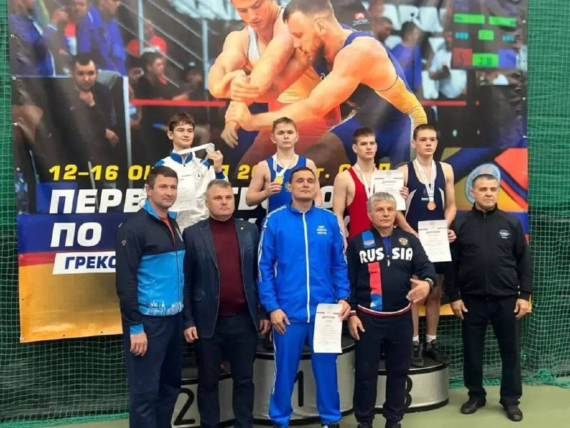
01
Спорт · событие дня

✅ Сегодня в регионе более 100 штабов взаимопомощи, а на платформе Добро.рф зарегистрированы свыше 85 тысяч добровольцев.…
Ю.А.Гагарина школьники посетили инженерный центр, где начинается жизнь самолета, механообрабатывающие цеха, где создаются детали будущих истребителей и гражданских лайнеров, а также цеха агрегатной сборки.……
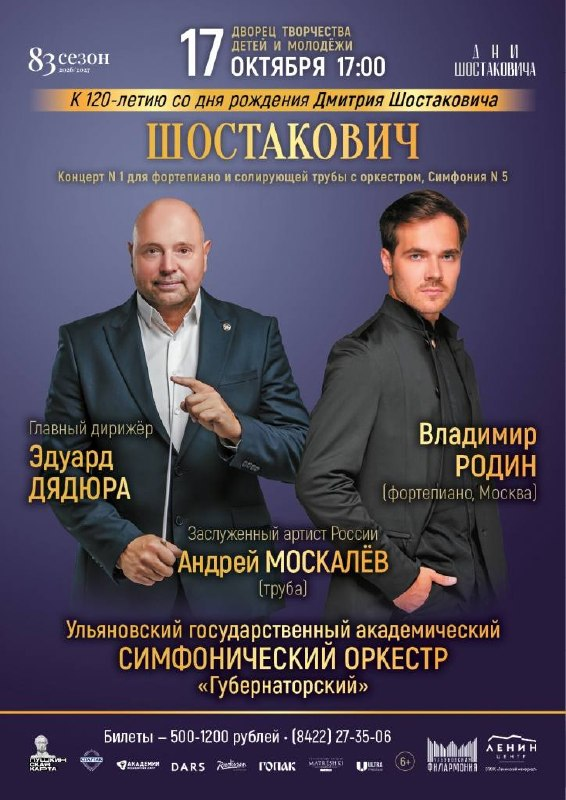
🏷️ 500-1200₽ Подробности и билеты 🎟️ ▪️ Андрей Лефлер и Русский оркестр 🗓️ 18 октября в 17:00 📍 ДДН "Губернаторский" Концерт памяти Александра Градского.…
И сейчас лучшее время стать его владельцем. 💰 Специальная цена: от 2 295 000 ₽.…
Ранее Осинников руководил управлением региональной и технологической работы партии.…
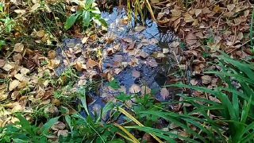
Представители делегации вместе с главой города Александром Болдакиным приняли участие в торжественной церемонии возложения цветов к памятнику вьетнамскому государственному деятелю, борцу за национальное освобождение Хо Ши Мину.…

Если сведения источника верны, Казанов может располагать информацией о многих непубличных делах губернатора.…

Этот вопрос для депутатов крайне важен, подчеркнул Председатель ГД Председатель Государственной Думы Вячеслав Володин в ходе…
Глава города Александр Болдакин поручил подготовить площадку и всё необходимое оборудование для проведения торговли, которая традиционно развернётся на проспекте Гая между улицами Инзенская и Хрустальная.…

Жители Ульяновска за девять месяцев 2026 года заключили 1015 социальных контрактов на открытие предпринимательской деятельности, прохождение обучения и выход из сложной жизненной ситуации — такую статистику привели в администрации города.…
Глава города Александр Болдакин поставил задачу увеличивать количество людей, получающих соответствующую финансовую поддержку в рамках национального проекта «Семья».…
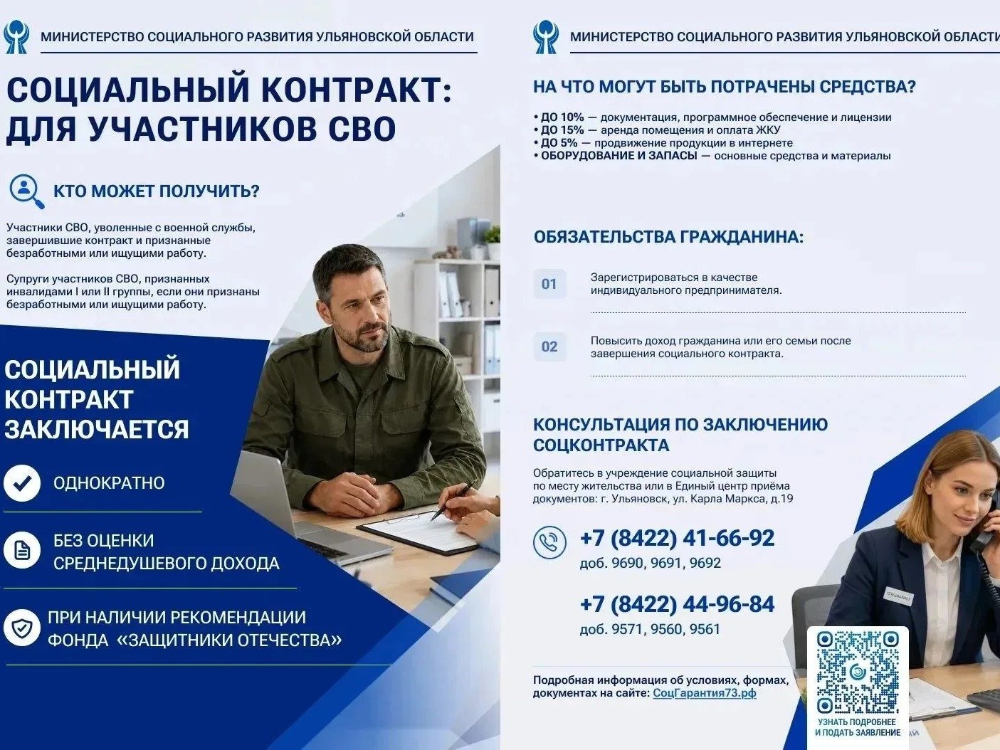
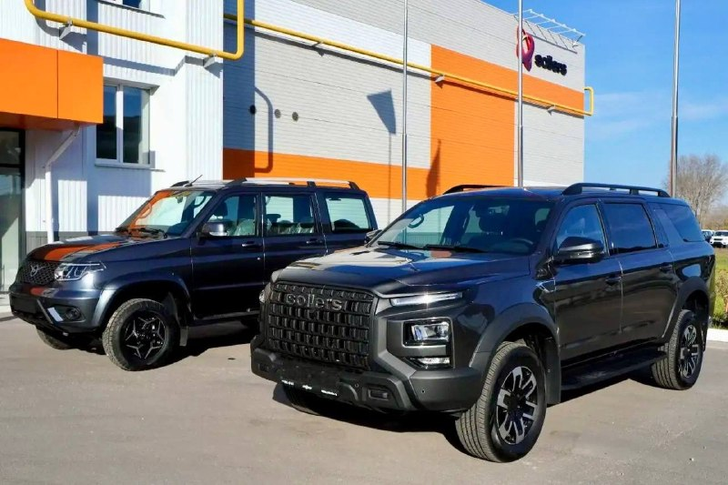
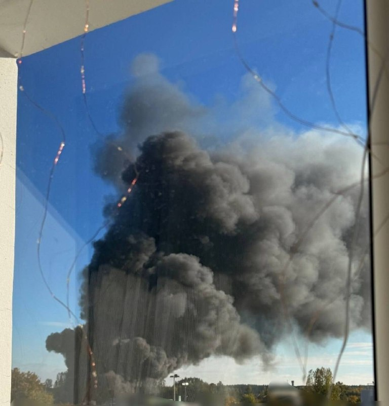
Держите в руках 🔥 🛡️ Гарантия 2 года — мы уверены в качестве и отвечаем за каждый аппарат А теперь — про выгоду: 🔄 Высокая оценка по трейд-ину — ваш старый iPhone примем дороже рынка ➕ Дополнительная скидка при сдаче старого на новый 📱 Самые выгодные цены на новинки — сейчас!…
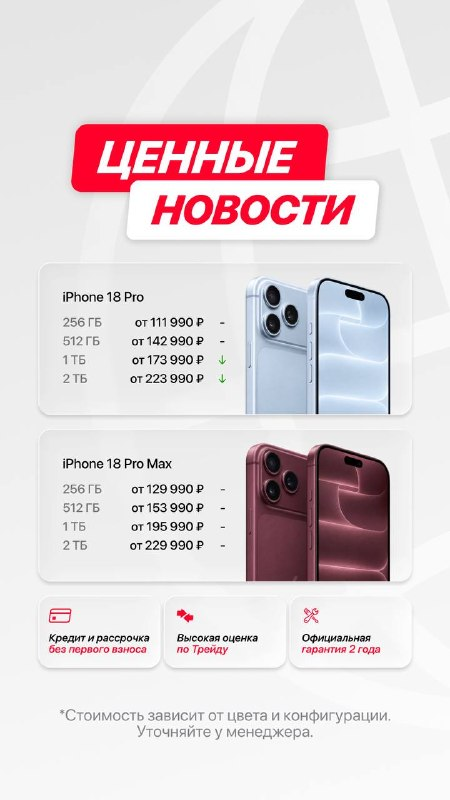
Сможешь попробовать себя в ремеслах и нарядом своим перед другими похвастать!…
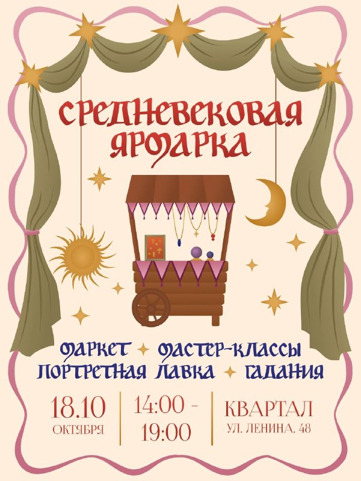
Другие заявления Главы государства: — Бизнес РФ демонстрирует ответственную гражданскую позицию в нынешнее непростое время.…
В рамках визита представители РСПП получили возможность ознакомиться с процессами производства компонентов систем пассивной безопасности, посетили производство «Штамповые технологии» и увидели этапы сборки автомобилей на главном конвейере УАЗ.……

Осваивают серийное производство спасательных и служебных судов, шлюпок и катеров на базе унифицированной композитной платформы.…
В среду, 14 октября, Комитет по охране здоровья обсудил законопроект об установлении особенностей исполнения бюджетов бюджетной…
Донору, сдавшему кровь или её компоненты, полагаются: денежная компенсация на питание в размере 916 рублей и 2 выходных дня по месту работы — в день сдачи крови и любой другой день по выбору в течение года после донации.…
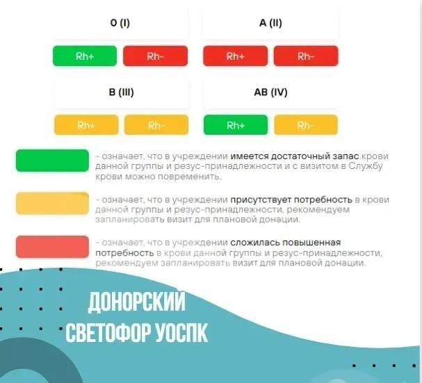
Правительство дополнило перечень стратегически значимых лекарственных средств, обеспечивающих приоритетные потребности системы…
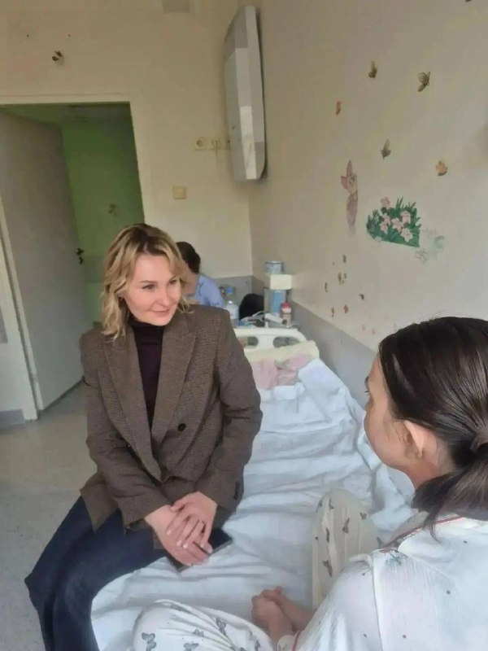
Иванова поговорила с врачами, которые отмечают положительную динамику. Рядом с девочкой находятся родные.…
Ребята — воспитанники тренера Алмаза Абдуллина.…
Региону причинили ущерб на 645 тысяч рублей при незаконном изъятии земли.

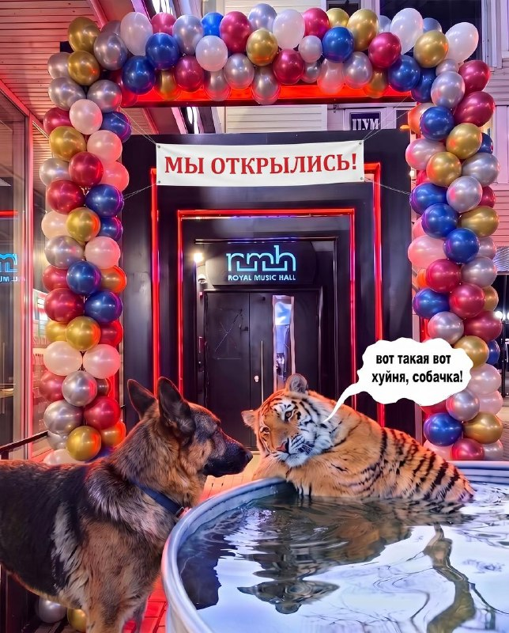
Поэтому собирайте компанию и залетайте отмечать наше возвращение 🫶🏻 🎟️ Вход для всех — 600₽ 📍 Гончарова, 21 🕙 Двери — 22:00 | Шоу — 00:00 📋 Бронь: @rmh_reserve | +7 937 881-51-11 #16октября2026@ulpromo Движ в любимом У…
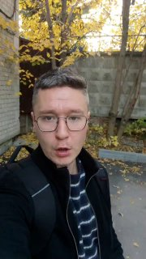
Поэтому скорее заканчиваем работу и идём гулять по ульяновским улочкам ☀️ Видео: sokolaero…
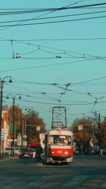
Для всех отцов Ульяновска и области на этот воскресный день заготовлено большое количество концертов и праздничных акций, ну, а самое приятное, от чего затрепещет даже самое закалённое мужское сердце — песня, подготовленная любимым ребёнком любимому папе.…

Записки мастера открывают и завершают экспозицию, а «Самолётик надежды» встречает посетителя в начале и провожает в конце.…

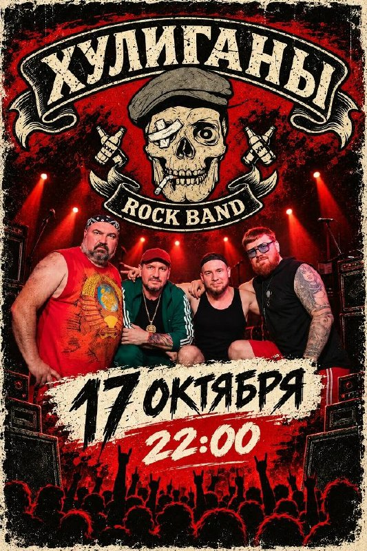
История о четырёх щенках — четырёх женщинах в закрытом пространстве.…
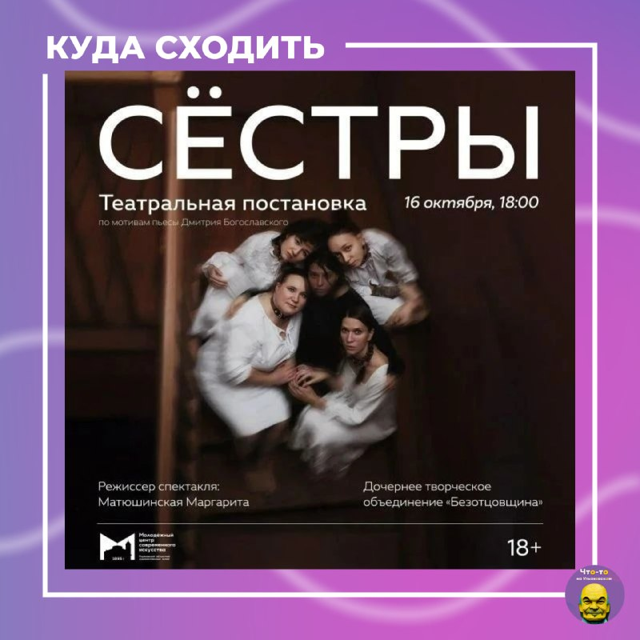
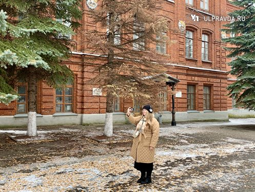
По инструкции собеседника женщина отправила на указанные счета больше 1,2 миллиона рублей личных сбережений. Полиция устанавливает владельцев счетов, куда ушли деньги.…
В Ульяновском районе 45-летняя местная жительница потеряла свыше 1,2 миллиона рублей при попытке заработать на инвестициях в цифровую валюту — об этом сообщили в региональном управлении МВД.…

В Национальном автомобильном союзе России отметили: Lada Granta тоже может летать — достаточно установить ракетные двигатели.…

Внешне они похожи на погодные аэростаты, но на деле представляют серьезную опасность.…

Похищенное он сбыл случайному прохожему, а вырученные деньги потратил на себя.…
По имеющейся у нас информации, несколько недель назад в димитровградский суд поступили дела об административных правонарушениях, допущенных руководителями разных подведов городской мэрии.…
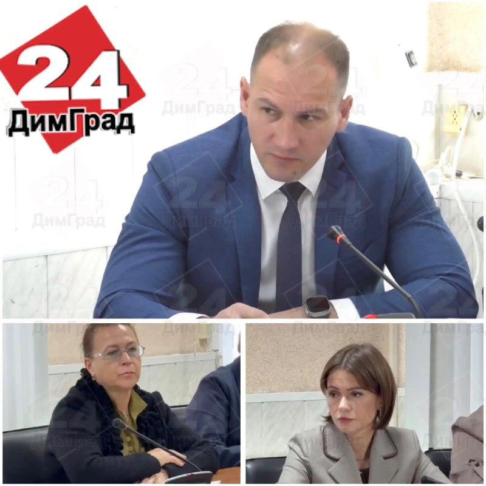
В Заволжском районе полицейские задержали ранее судимого 47-летнего жителя Ульяновска по подозрению в краже сливочного масла из супермаркета на проспекте Созидателей, сообщает пресс-служба УМВД по Ульяновской области.…

🩸 В Ульяновске возникла потребность в донорах первой отрицательной и второй группы крови обоих резус-факторов.…
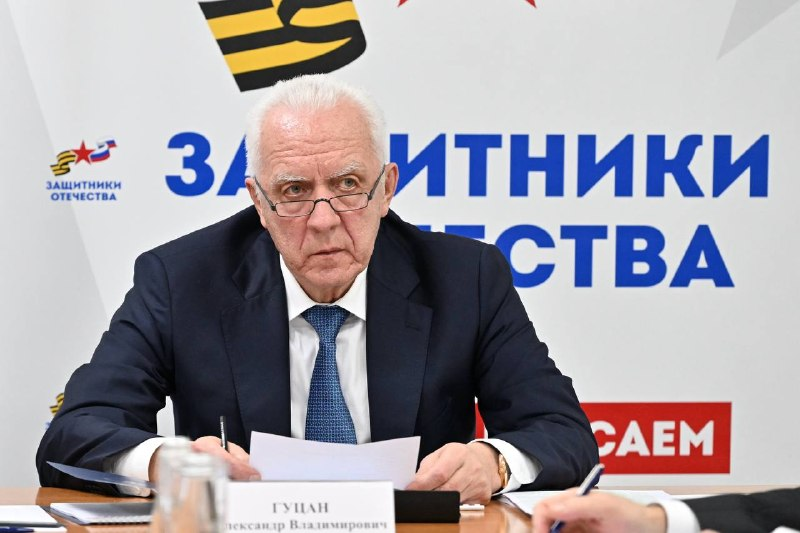
— Под контролем Киева остается 10% территории ДНР и около 16% Запорожской области. — Освобождена Алексеево-Дружковка в ДНР.…

По данным на 16 октября Управление Россельхознадзора по Чувашии и Ульяновской области одобрило 528 из 551 заявок на согласование маршрутов перевозки и перегона сельскохозяйственных животных из региона.…
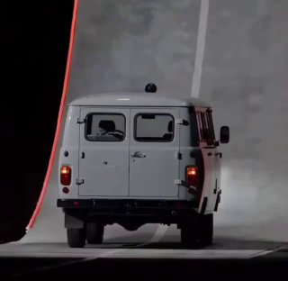
Судя по всему, участникам потасовки не до сна, да и окружающим спокойно отдохнуть не дают.
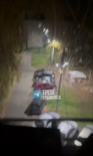
Такие операции были успешно проведены на животных и на телах умерших.…
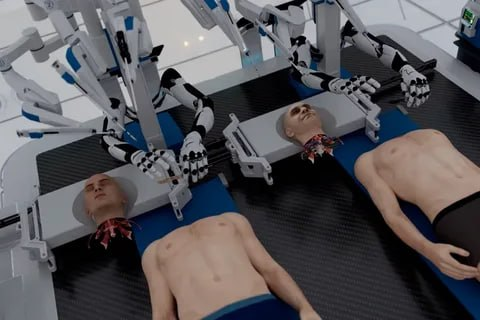

Чаще всего их приобретают женщины от 25 до 65 лет — на них приходится 67% от общего числа потребителей.…
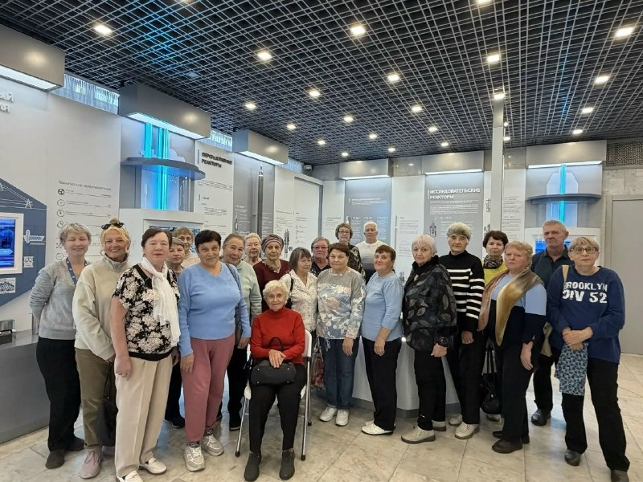
Крутейшая кавер-команда с уникальным репертуаром и взрывной энергетикой. Усидеть на месте не получится!
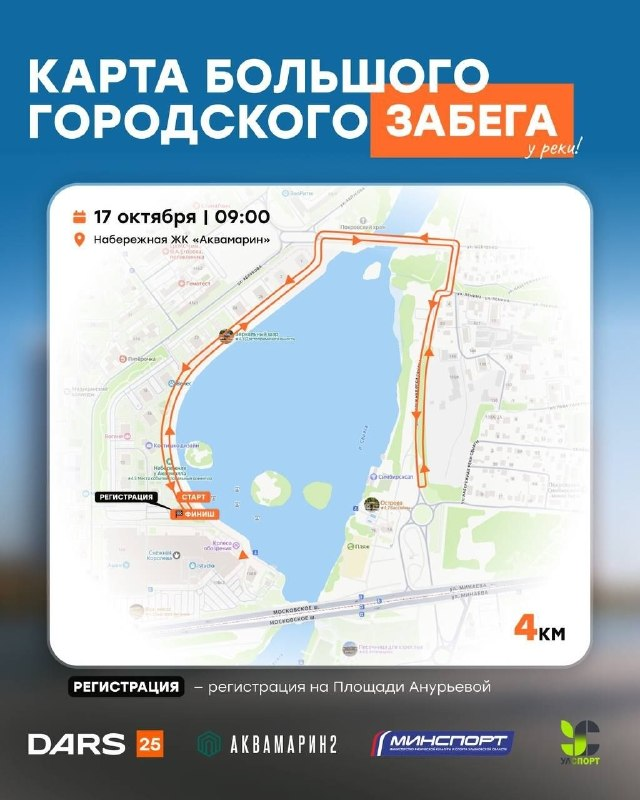
«Аллею славы» ежегодно обновляется с 2006 года. Мероприятие входит в комплекс мер поддержки учителей в рамках национального проекта «Молодёжь и дети».
Рассмотрели проект федерального закона «О федеральном бюджете на 2027 год и на плановый период 2028 и 2029 годов».…
Доноров просят помочь ▶️ Возложили цветы, посадили деревья.…
Школьникам также предстоит разобраться в основных образцах вооружения и военной техники российской армии.…
Это четыре летних смены для школьников 6-9 классов - в каждой по четыре направления: от графического дизайна и веб-разработки до внешнего пилотирования беспилотных авиационных систем, робототехники, сварочных технологий и диагностики летательных аппаратов.…

Сдвинуть начало уроков предлагают там, где они сейчас идут с восьми, после осенних каникул и до весенних — то есть на две четверти.…

| Тема | Завтра | Ожидание | Уверенность |
|---|---|---|---|
| Суды и криминал | ↓ спад | ~16.2 упоминаний | средняя |
| Транспорт и дороги | ↓ спад | ~22.6 упоминаний | средняя |
| БПЛА и воздушные угрозы | ↓ спад | ~9.9 упоминаний | средняя |
| Школы и вузы | ↓ спад | ~11.8 упоминаний | средняя |
| Губернатор / власть | ↓ спад | ~26.9 упоминаний | средняя |
| ЖКХ, газ, тепло | ↓ спад | ~0.4 упоминаний | средняя |